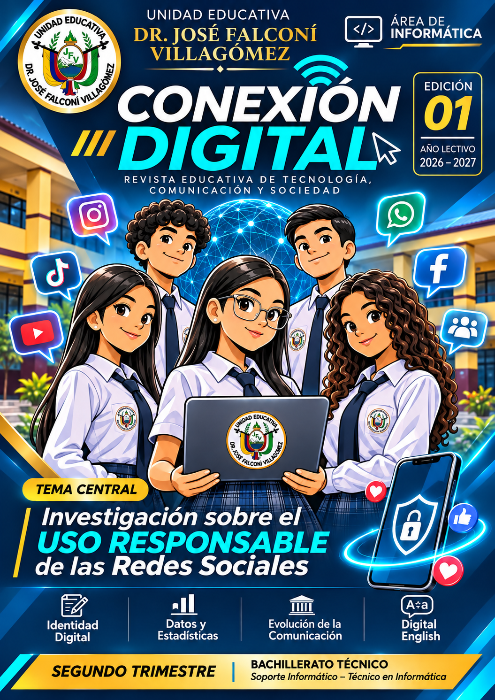

UNIDAD EDUCATIVA DR. JOSÉ FALCONÍ VILLAGÓMEZ
Tu identidad,
tu voz,
tu mundo digital.
Una revista creada por estudiantes de Bachillerato Técnico para investigar, reflexionar y promover el uso responsable de las redes sociales.
Explorar la revistaSEGUNDO TRIMESTRE · AÑO LECTIVO 2026–2027

EDICIÓN DIGITAL
Lee nuestra revista
Avanza página por página o selecciona una miniatura para abrirla.
UN PROYECTO INTERDISCIPLINARIO
Aprender, crear y comunicar en equipo.
Conexión Digital reúne el trabajo colaborativo de primero, segundo y tercero de Bachillerato Técnico, con la participación de Lengua y Literatura, Matemática, Historia e Inglés.
“
Conéctate, infórmate y actúa con responsabilidad.
CONEXIÓN DIGITAL · EDICIÓN 01